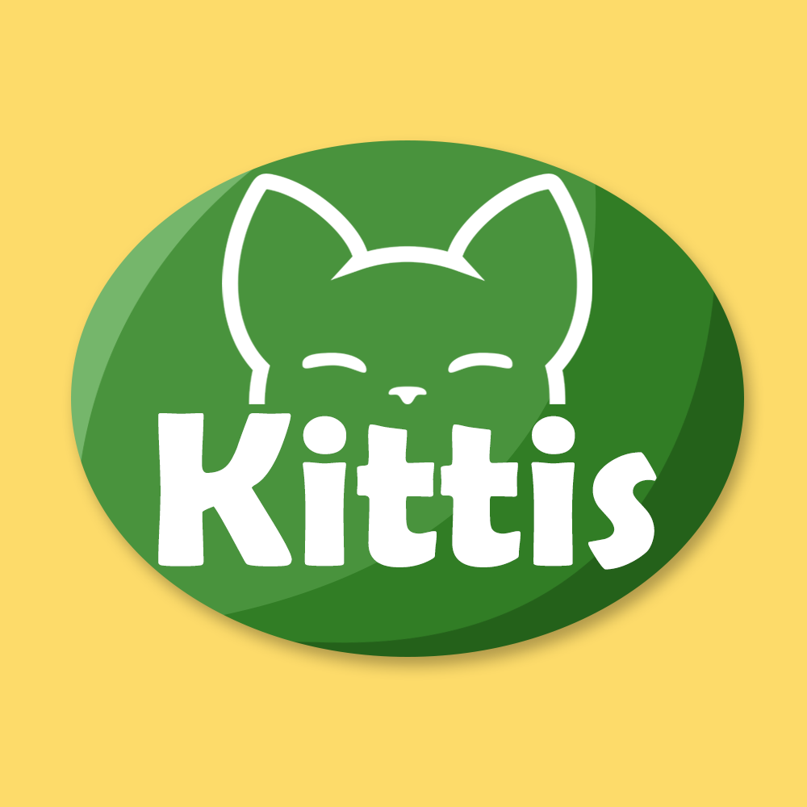
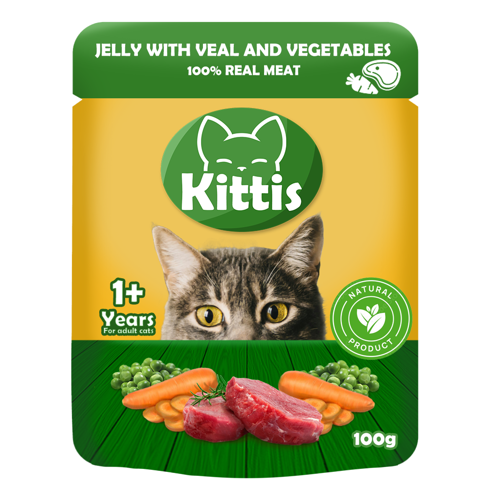
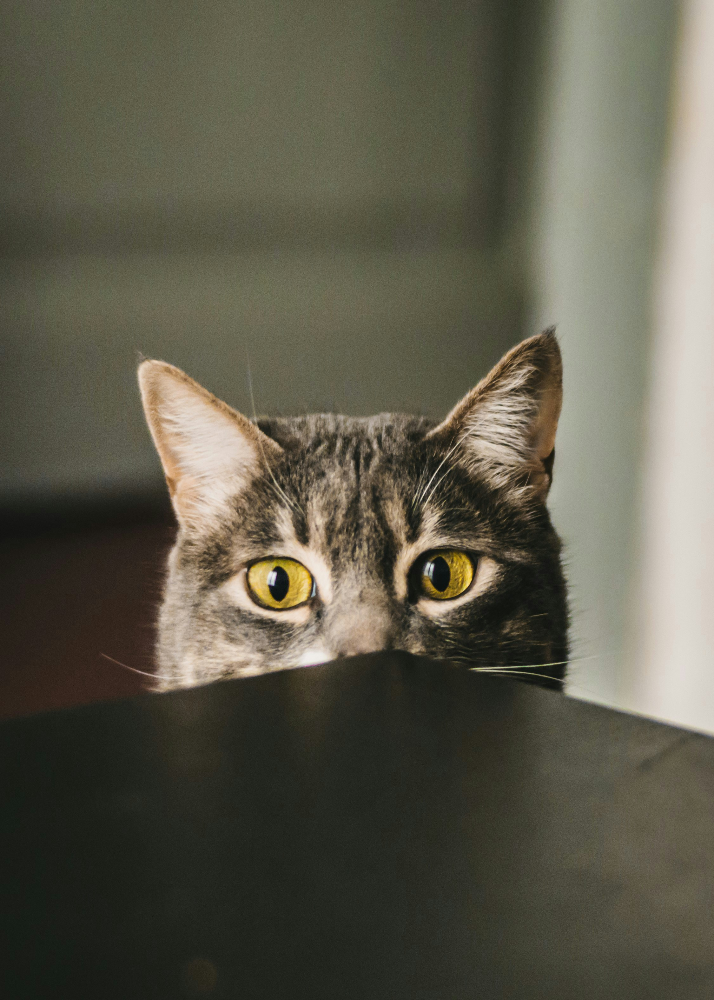

Kittis
Cat Food Branding Project
Kittis Logo
A minimalistic logo created using Adobe Photoshop and Adobe Illustrator.
The green color palette reinforces the brand’s focus on healthy, natural food, aligning with its target audience. The brand name features a playful yet eye-catching font, paired with a custom vector cat face designed in Adobe Illustrator. This vector emphasizes the brand’s focus on cat products, creating a strong, recognizable identity that resonates with pet owners.
The green color palette reinforces the brand’s focus on healthy, natural food, aligning with its target audience. The brand name features a playful yet eye-catching font, paired with a custom vector cat face designed in Adobe Illustrator. This vector emphasizes the brand’s focus on cat products, creating a strong, recognizable identity that resonates with pet owners.

Product Item

The packaging for this product was created for the appeal of health-conscious cat owners, highlighting the product’s natural ingredients and playful branding.
Key Skills:
● Photo Manipulation:
Seamlessly blended images of a cat and fresh ingredients, adjusting lighting and shadows for a cohesive look.
● Creativity:
Used vibrant colors and playful typography to evoke a natural, healthy feel and capture attention.
● Branding & Layout:
Clear typography, eye-catching layout, and consistent green tones reinforce the brand's natural focus.
This design strikes a balance between visual appeal and effective communication, helping the product stand out to potential buyers.
To illustrate the process, below is a comparison between the original photo by Biel Morro and the final product packaging created by me.

Advertising Banner
This banner is designed to draw immediate attention to the product, reinforcing its natural ingredients and wholesome qualities.
The layout and visuals focus on promoting the brand’s health benefits, creating a strong, memorable connection with health-conscious cat owners while ensuring the product remains the focal point.
The layout and visuals focus on promoting the brand’s health benefits, creating a strong, memorable connection with health-conscious cat owners while ensuring the product remains the focal point.